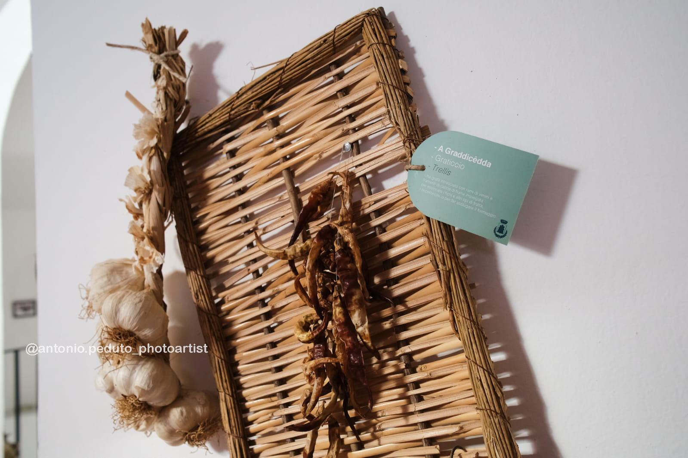
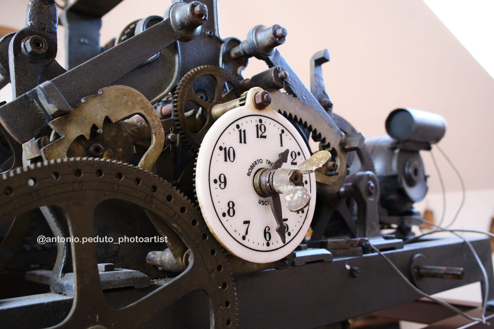
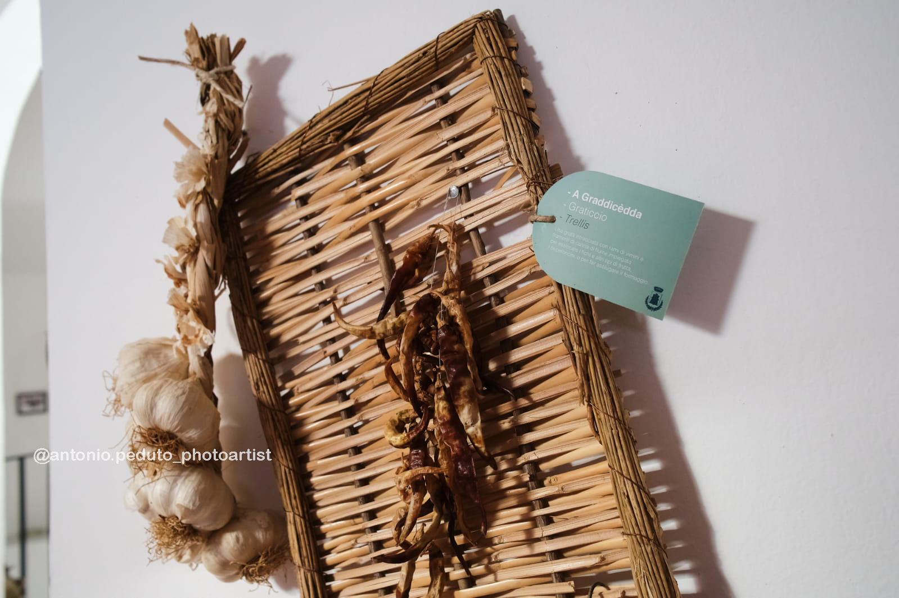
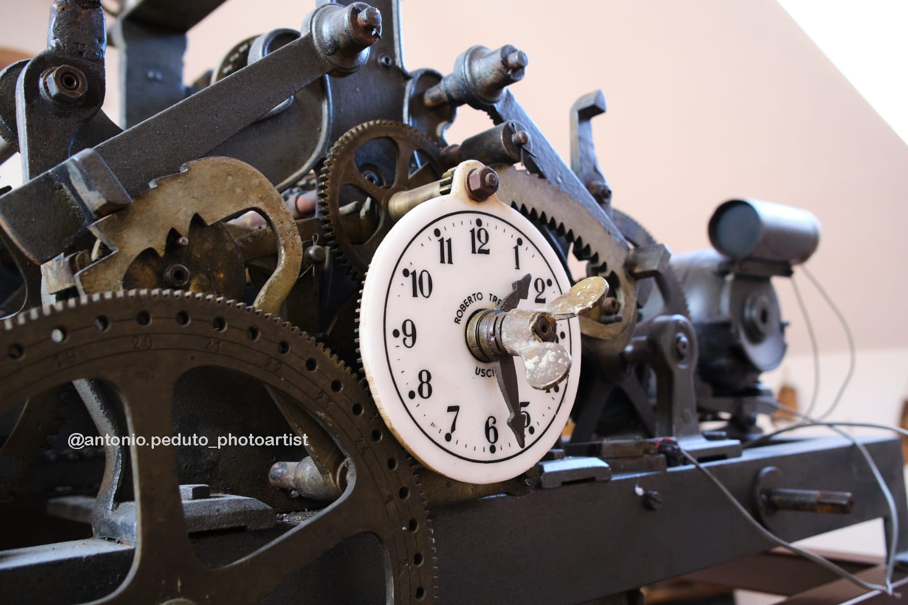

/
/
Informazioni/Informations
⏰ Orari di apertura/Opening hours:
Lun–Dom, 9:00-13:00 14:00–19:00
📍 Ci troviamo in/We are located at:
Piazza Umberto I n° 3, Castel San Lorenzo (SA)
Descrizione/Description
Il museo della civiltà contadina di Castel San Lorenzo, si trova nel vecchio Municipio, sito in Piazza Umberto I, (centro storico del paese). In esso potrete osservare com'era la vita della popolazione 'castellese' negli anni passati, incentrata principalmente tra agricoltura e artigianato.The Rural Life Museum in Castel San Lorenzo is located in the old town hall, in Piazza Umberto I (the village historical centre). Here you can see what life was like for the people of Castel San Lorenzo in the past, which was mainly focused on agriculture and craftsmanship.

 


